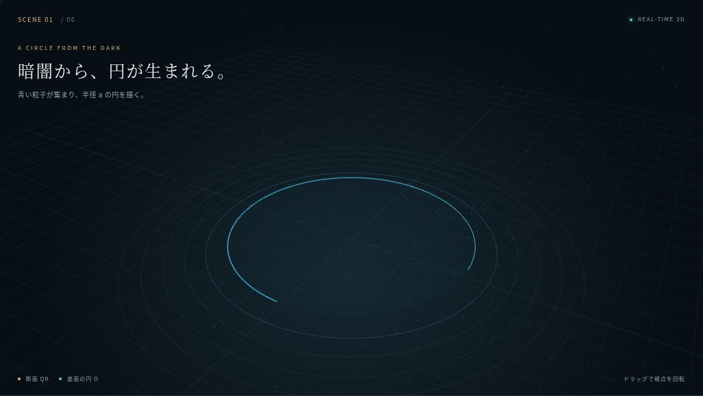
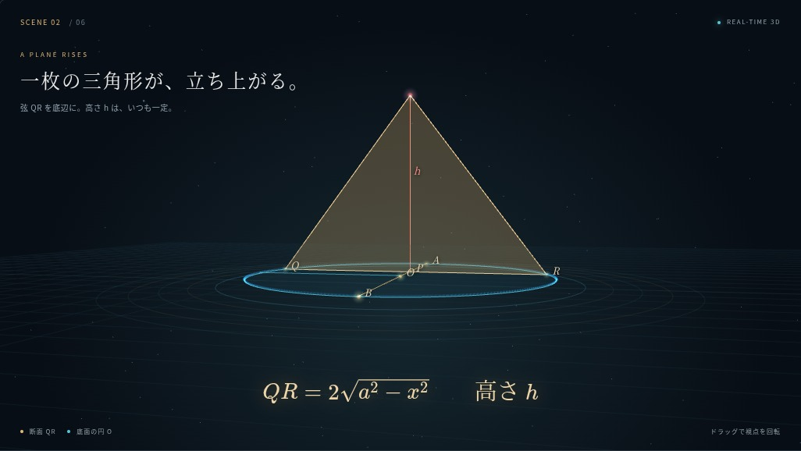
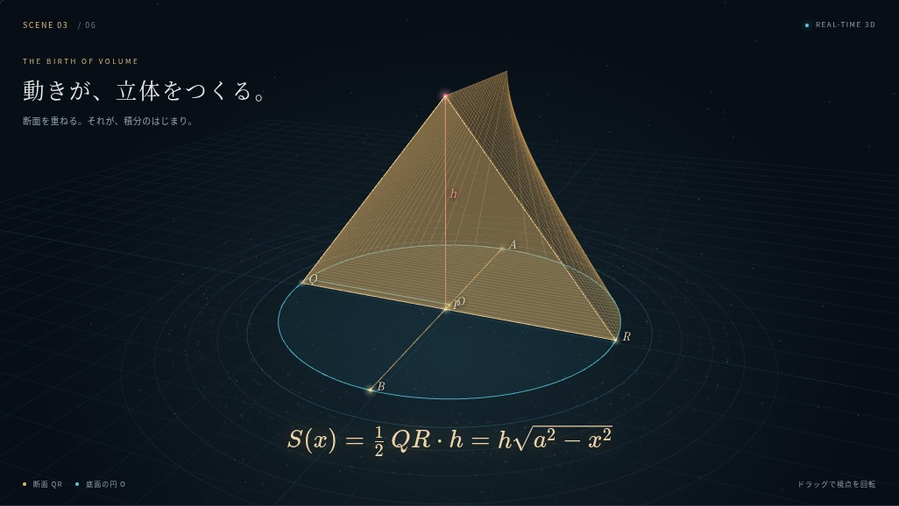
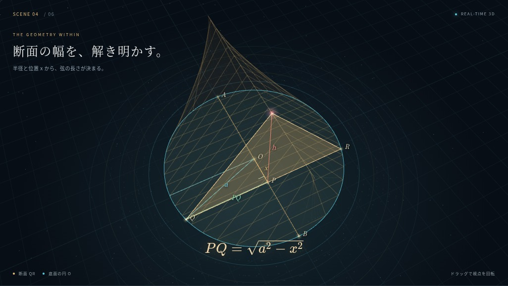
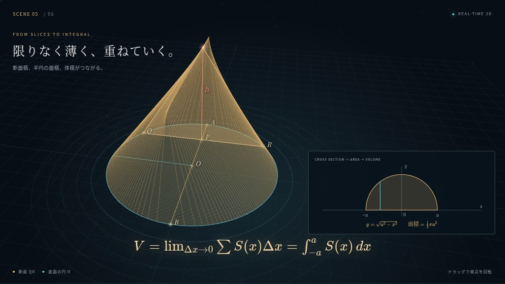
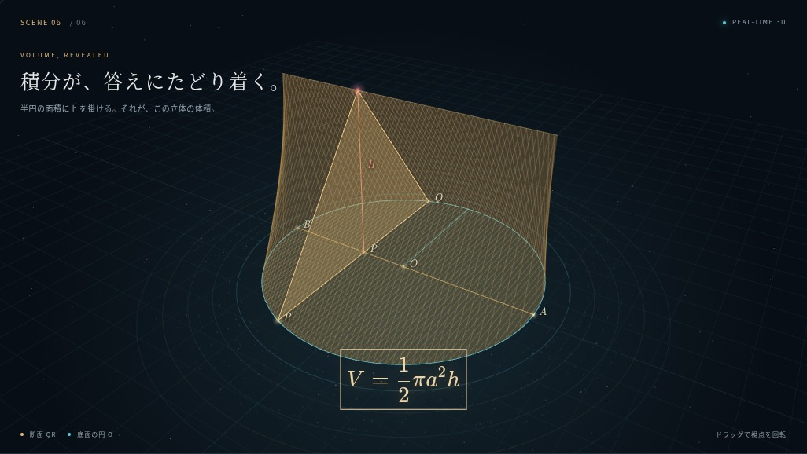

このページは初回3D教材の検証記録です。追加した教室映画の90秒・30秒MP4は、新しい映画の制作記録をご覧ください。
制作・検証記録 / 2026年11月6日90秒版と操作教材は教材ページで再生できます。30秒MP4は実際の教材を1/60秒ずつ描画して生成しました。

01 / 0〜12秒 円が粒子から形成される

02 / 12〜27秒 弦・高さ・三角形を構成する

03 / 27〜44秒 三角形の移動がメッシュを作る

04 / 44〜59秒 辺と三平方の定理を対応させる

05 / 59〜76秒 断面、面積グラフ、積分を同時に表示

06 / 76〜90秒 同じ立体の回転と体積の答え
| 検証項目 | 結果 |
|---|---|
| x=0 の弦・面積 | QR=4、S(0)=5（a=2、h=2.5） |
| x=±a の断面積 | 0 |
| 高さ・垂直性 | 頂点=(x,h,0)、底辺は高さ0、断面はx一定 |
| 積分とメッシュ体積 | 5つの生成位置で四面体分解による体積と照合し合格 |
| 全体積 | ½πa²h = 5π ≈ 15.707963 |
| スライダー・表示・回転・停止・2D | Chromiumで操作確認 |
| スマートフォン配置 | 390px幅で横スクロールなし、数式の縮小調整 |
教材ソース：index.html / style.css / app.js / model.js / material.json / thumbnail.svg / vendor/。
検証：tests/mathematics.check.mjs。書き出し：render/export.cjs。
映像：integral-solid-30s.mp4。画像：scene-01.jpg〜scene-06.jpg、library.jpg、mobile.jpg。
GitHubの教材ソース · 教材一覧への反映画像 · スマートフォン表示画像 · 教材ソースZIP（動画別） · 機械検証結果・映像メタデータ
利用者の承認に基づき、GitHub教材ライブラリへの保存と本人限定ページへの公開を行います。以下は完成教材の制作・検証記録です。
90秒版は実時間WebGLアニメーションとして提供します。90秒MP4は生成していません。実時間のフレームレートは端末性能に依存します。iPhone・iPad実機は未検証です。2D表示は底面の真上からの投影です。
既存ライブラリの全体テストでは、今回変更していない教材のサムネイル未登録と領域判定に失敗があります。新規教材の数学チェックとビルド・操作検証は個別に確認しています。